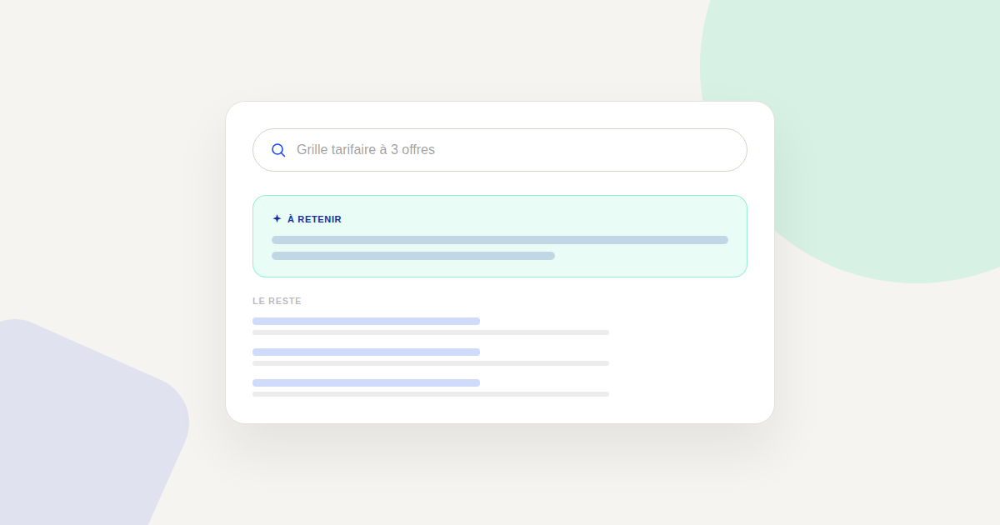
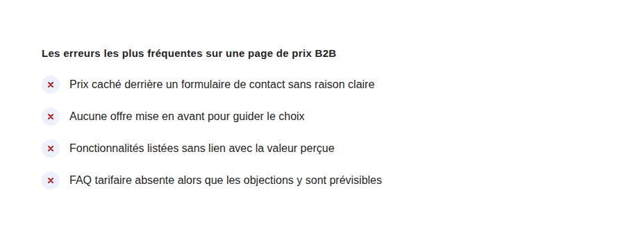

Page de prix : les erreurs qui font fuir un prospect B2B
La page de prix reçoit en général un trafic très qualifié — des visiteurs déjà convaincus de l'intérêt du produit — et c'est pourtant l'une des pages les plus négligées d'un site B2B. Chaque erreur y coûte proportionnellement plus cher qu'ailleurs sur le site.

Un visiteur qui arrive sur une page de prix a déjà franchi plusieurs étapes de qualification : il connaît le produit, en comprend l'intérêt, et cherche à savoir s'il rentre dans son budget. C'est un trafic rare et précieux — ce qui rend chaque friction inutile sur cette page proportionnellement plus coûteuse que sur n'importe quelle autre page du site.
Erreur n°1 — Cacher le prix sans raison claire
Demander de remplir un formulaire pour obtenir un tarif, sans justification apparente, déclenche une méfiance immédiate : le visiteur suppose que le prix doit être mauvais pour être caché ainsi. Cette pratique se justifie uniquement quand le prix dépend réellement de variables complexes propres à chaque client (volume, intégration sur mesure) — et dans ce cas, l'expliquer clairement plutôt que de simplement masquer le prix change radicalement la perception.
Erreur n°2 — Aucune offre mise en avant
Face à trois offres présentées de façon strictement identique, un visiteur indécis a plus de mal à choisir — et l'indécision se traduit souvent par un abandon plutôt que par un choix. Mettre visuellement en avant l'offre la plus adaptée à la majorité des visiteurs (via un badge « recommandé » ou une mise en forme différenciée) réduit cette charge de décision.
Erreur n°3 — Des fonctionnalités listées sans lien avec la valeur
Une liste de fonctionnalités techniques sans traduction en bénéfice concret oblige le visiteur à faire lui-même le travail de compréhension — un travail qu'une partie non négligeable des visiteurs ne fera simplement pas. Chaque ligne de la grille tarifaire devrait répondre à la question implicite « en quoi cela me sert », pas seulement lister ce qui est inclus techniquement.

Erreur n°4 — Pas de FAQ tarifaire
Les objections sur une page de prix sont largement prévisibles : engagement minimum, modalités de résiliation, coûts additionnels, différence entre deux offres proches. Ne pas y répondre directement sur la page pousse le visiteur soit à chercher la réponse ailleurs (et potentiellement à abandonner en route), soit à ouvrir un canal de contact pour une question qui aurait pu être résolue instantanément.
Le principe qui guide une bonne page de prix B2B
Une page de prix efficace traite chaque friction comme un coût direct, parce que le trafic qui y arrive est rare et déjà qualifié : contrairement à une page d'accueil où l'on peut se permettre un peu d'ambiguïté, ici chaque doute non résolu a une probabilité disproportionnée de se traduire par un abandon plutôt qu'une prise de contact.
FAQ
Faut-il toujours afficher un prix exact sur une page B2B ?
Pas nécessairement si le prix dépend réellement de variables complexes, mais dans ce cas, expliquer pourquoi et donner une fourchette indicative reste préférable à un silence total sur le sujet.
Combien d'offres afficher sur une grille tarifaire ?
Trois offres est un standard qui fonctionne bien dans la plupart des contextes B2B : assez de choix pour couvrir différents besoins, pas assez pour créer une paralysie de décision.
Une FAQ tarifaire remplace-t-elle un appel commercial ?
Non, elle le précède plutôt : elle élimine les questions simples pour que l'échange commercial, quand il a lieu, porte sur des sujets à plus forte valeur ajoutée.
Envie d'un audit de votre page de prix B2B ?
Pour aller plus loin, voir la page CRO, et l'article Trust signals.
Pour continuer sur ce sujet.